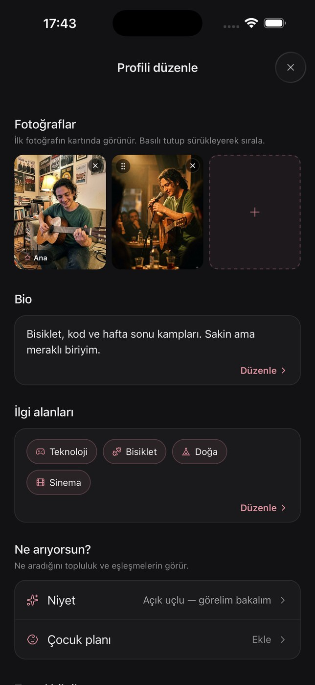
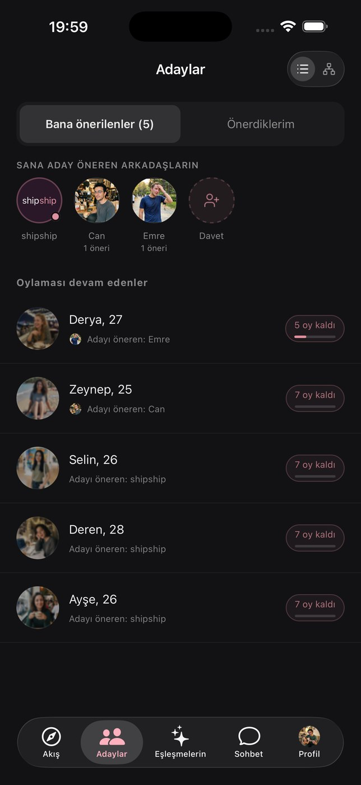
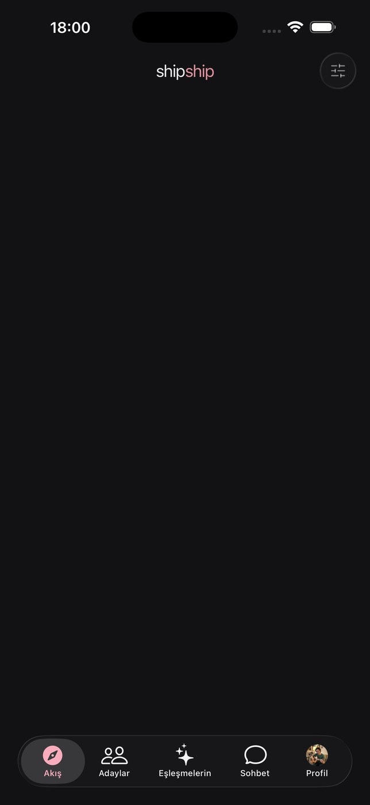
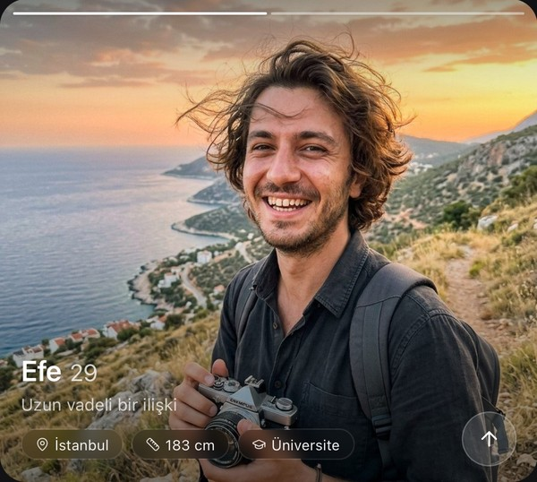
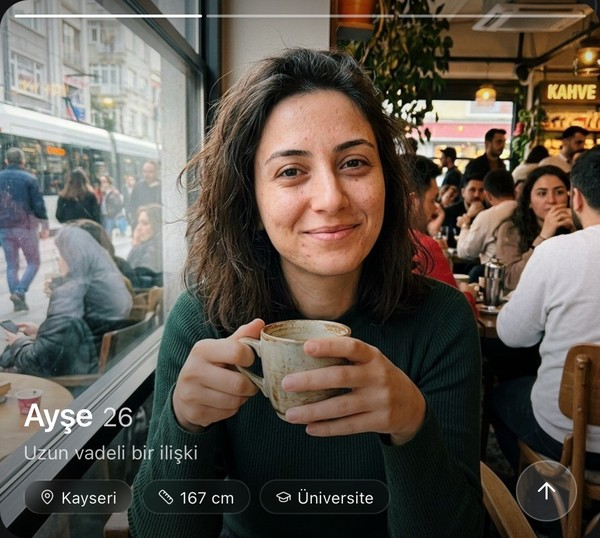
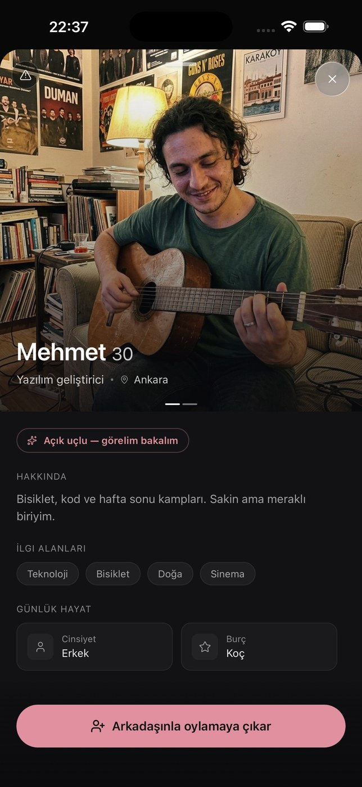

<!-- ═══ 2 · OMURGA ═══ -->
<section class="spine">
  <div class="spine-scroll" id="spineScroll">
    <div class="spine-grid">
      <div class="spine-sticky">
        <div class="phone-wrap">
          <div class="phone"><div class="screen">
            <div class="app on"></div>
            <div class="app"></div>
            <div class="app oy" id="oyKat">
              
              <div class="oy-kart b arka" id="oyB2"></div>
              <div class="oy-kart a arka" id="oyA2"></div>
              <div class="oy-kart b" id="oyB"></div>
              <div class="oy-kart a" id="oyA"></div>
              <div class="oy-rozet" id="oyRozet"><span class="halka">✓</span>Uygun</div>
            </div>
            <div class="app"></div>
            <div class="app"></div>
            <div class="app"></div>
          </div></div>
        </div>
      </div>
      <div class="spine-col">
        <div class="stage-head"><h2>Nasıl çalışıyor?</h2></div>
        <div class="steps" id="steps">
          <div class="step"><h3>Profilini doldurursun</h3><p>Birkaç fotoğraf, ne aradığın ve seni anlatan birkaç satır. Her şey buradan başlar.</p><!-- MOBİL:BAŞ --><div class="step-shot" aria-hidden="true"></div><!-- MOBİL:SON --></div>
          <div class="step"><h3>Adayların belirlenir</h3><p>Sistem herkesin girdiği bilgilere bakar, sana uyanları aday olarak seçer. Profilin doldukça adayların isabetlenir.</p><!-- MOBİL:BAŞ --><div class="step-shot" aria-hidden="true"></div><!-- MOBİL:SON --></div>
          <div class="step"><h3>İkilileri oylarsın, oyladıkça sen de oylanırsın</h3><p>Akış’ta karşına ikili gelir; oy kişiye değil, ikilinin uyumuna verilir. Oy verdikçe aday olduğun ikililer Akış’ta öne geçer, daha hızlı oylanırsın.</p><!-- MOBİL:BAŞ --><div class="step-shot" aria-hidden="true"><span class="k a"></span><span class="k b"></span></div><!-- MOBİL:SON --></div>
          <div class="step"><h3>Yeterli “Uygun” oyu gelince yakıştırılırsın</h3><p>Topluluk yeterince “Uygun” derse seni yakıştırır. Tanışmak ya da geçmek sana kalmış; ikiniz de Tanış derseniz eşleşirsiniz, sohbet açılır.</p><!-- MOBİL:BAŞ --><div class="step-shot" aria-hidden="true"></div><!-- MOBİL:SON --></div>
          <div class="step"><h3>Arkadaşlarınla birbirinize aday önerebilirsiniz</h3><p>Yakın arkadaşlarını çevrene eklersin; onlar sana, sen onlara aday çıkarırsın. Arkadaşlar birbirini daha iyi tanır.</p><!-- MOBİL:BAŞ --><div class="step-shot" aria-hidden="true"></div><!-- MOBİL:SON --></div>
          <div class="step"><h3>Görünürlüğünü gizleyebilirsin</h3><p>Profilini oylamalardan çekebilirsin; kimse seni oylamaz ama sen oylamaya devam edersin. İstediğin an geri dönersin.</p><!-- MOBİL:BAŞ --><div class="step-shot" aria-hidden="true"></div><!-- MOBİL:SON --></div>
        </div>
      </div>
    </div>
  </div>
</section>
